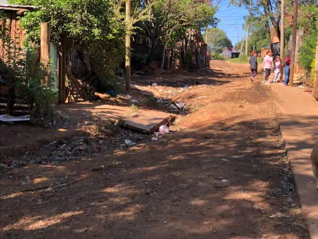
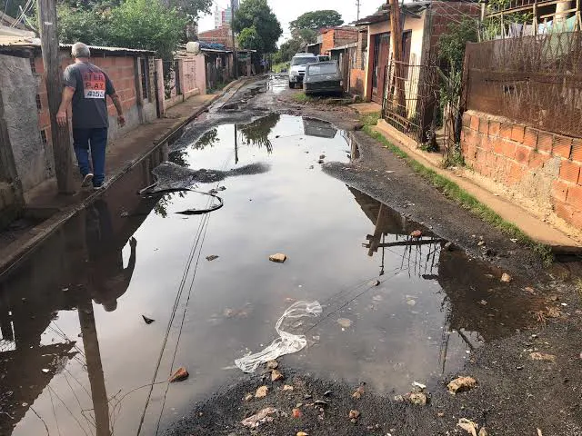
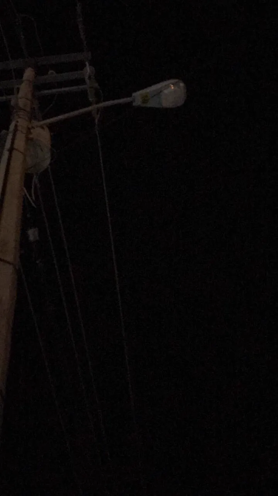
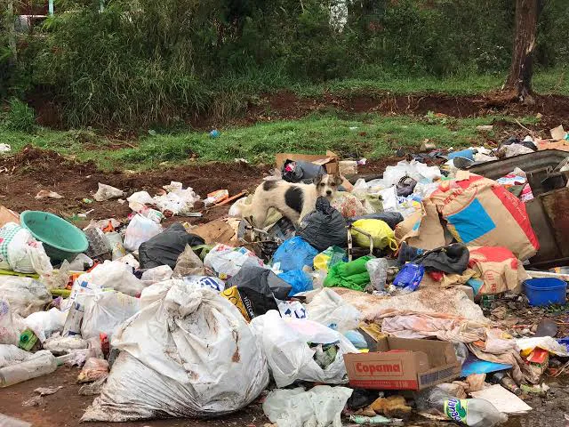
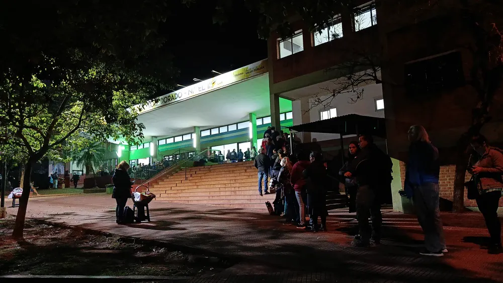
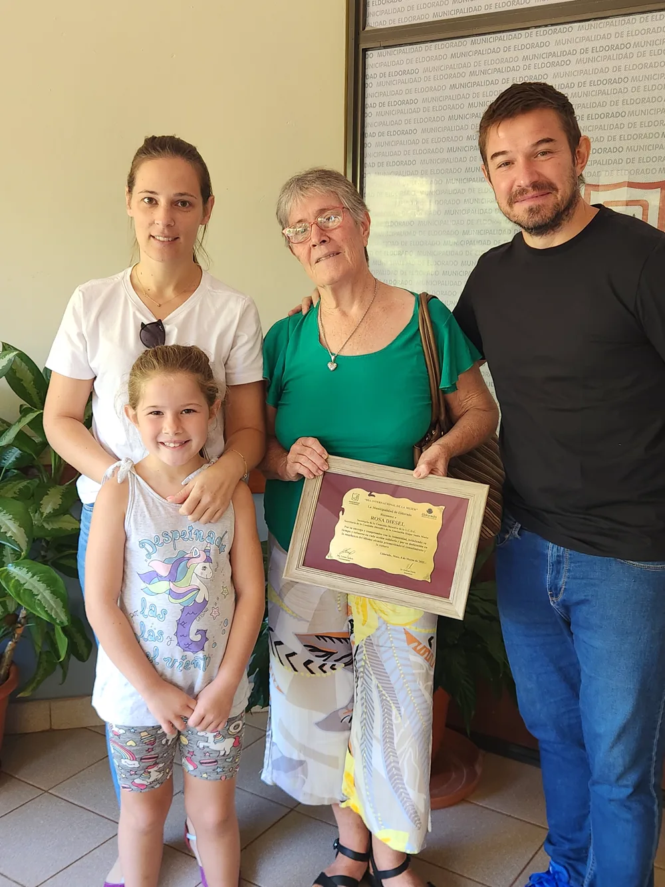

DIC 2025 · PRENSA
Asunción y primeras definiciones ante Canal 11
Tras la jura en el gimnasio Malvinas Argentinas, adelanté las prioridades de la banca.
Concejal de Eldorado · Misiones · 2025–2029
Vecino de Eldorado — Electo concejal el 8 de junio de 2025 — Honorable Concejo Deliberante
Soy Esteban Nöller, nacido y criado en Eldorado. Soy ingeniero en sistemas y empresario: al taller mecánico que heredé de mi papá le sumé una distribuidora de alimentos. Conozco la ciudad desde el mostrador, no desde un escritorio: sé lo que cuesta pagar una tasa, sostener empleos y esperar una respuesta que no llega.
Esa misma vocación de meter el hombro me llevó a presidir el Club Unión Cultural y Deportiva por casi 10 años, una institución con más de 70 años de historia, y en 2025 a encabezar la lista más votada de La Libertad Avanza en Eldorado y la provincia. El 11 de diciembre de 2025 asumí como concejal, donde integro la Comisión de Desarrollo Social y Ambiente.
Mi compromiso es simple: transparencia, cuentas claras y una gestión que responda — la lógica que la política perdió. Por eso creé subitureclamo.com, para que tu reclamo no se pierda en una ventanilla. Somos minoría en el Concejo, pero el control y las ideas no se miden en bancas.
“La política sirve cuando resuelve en serio, no con promesas de campaña que nunca llegan.”Esteban Nöller — Concejal de Eldorado
Transparencia y coherencia en cada peso que gasta el municipio. Cada proyecto, pensado para resguardar el dinero de todos los eldoradenses.
Acompañar a los clubes, a las entidades sin fines de lucro y a los deportistas en su desarrollo.
Herramientas digitales y charlas permanentes para eliminar la burocracia que todavía abunda en estos tiempos.
Problemas del barrio, gestiones municipales, turnos en organismos públicos. Cargalo en un minuto y seguí su estado.





Esto también es Eldorado
Y no puede
esperar otros
25 años.
| Tipo | Asunto | Fecha | Estado |
|---|---|---|---|
| Ordenanza | Empresas de servicios: registro de obras. Reparación obligatoria de roturas y multa por no dejar el sitio de obra en condiciones. | 08.2026 | EN PROCESO |
| Ordenanza | Creación de un destacamento de bomberos en el km 2, a cargo de la Policía de la Provincia. | 05.2026 | EN COMISIÓN |
| Ordenanza | Esponsorización de deportistas, clubes y entidades sin fines de lucro. | 05.2026 | EN PROCESO |
DIC 2025 · PRENSA
Tras la jura en el gimnasio Malvinas Argentinas, adelanté las prioridades de la banca.

MAR 2025 · LEGADO
Mi mamá recibió el reconocimiento de la ciudad como mujer destacada por su labor como secretaria del Club Unión Cultural y Deportiva de Eldorado. De ahí viene todo esto.
JUN 2026 · EQUIPO
Con el equipo de trabajo, sumando kilómetros y voluntades en cada rincón de Misiones.
Recorridas, sesiones y lo que va pasando en Eldorado, publicado apenas ocurre.
Seguime en @nolleresteban →Si es un reclamo de tu cuadra, cargalo acá: llega directo y podés seguirlo. Para todo lo demás, este formulario o el mail de la banca.